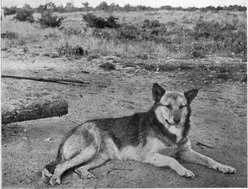

Sled-Dogs Of The North Trails. Part 2
Description
This section is from the book "Wild Life In Canada", by Angus Buchanan. Also available from Amazon: Wild Life in Canada.
Sled-Dogs Of The North Trails. Part 2
I will leave now the "sled-dogs of the Frontier and deal entirely with the more pure, more attractive types of those that are common to the borders of the Arctic. Perhaps some of the finest dogs I have seen were at Fort Du Brochet, at the north end of Reindeer Lake, where the Hudson Bay Company have stretched a tendril through inland wilderness almost to the line of the Eskimo country, and there established a Trading Post for Chipewyan Indians and those said Eskimos, so that they be induced to bring out the fur of a large inland area of the Barren-grounds and lay it on the rude barter counter of the Fur Traders' Store and purchase in exchange such luxuries as flour, and tobacco, and tea, and ammunition, and beads, and coloured cloths, and all such sort of things as are eagerly sought by simple, primitive natives. Once a year a small band of Eskimos travel south with furloaded sleds to Fort Du Brochet. Thereafter they are neither seen nor heard of until another year comes round. They bring with them pelts of White Wolves, Arctic Foxes, Bears, Wolverine, and a few Musk-ox skins-the last-named animals believed to be rare nowadays, but perhaps not so rare as it is written down to be for it inhabits, in most cases, country almost totally unknown to white men, and unapproachable. Sometimes the Eskimos bring a few Mink skins in their packs, but never Marten, which are indigenous to, forested country.
Husky Dog
A fine train-leader, wonderfully intelligent, one of the finest dogs I ever encountered.
Pure Husky Female. General colour, wolf-grey; eyes, brown; tip of tail, white.
But to return to the subject of sled-dogs; there are eight cabins at Fort Du Brochet, including the fur-traders', and the inhabitants of those owned twenty-two trains of sled-dogs: that is to say, 110 adult dogs, while a conservative estimate of pups-three to six months old- would add some forty head to the total dog population of the Post. Remember that only records the number of dogs within that tiny settlement, for beyond, on lone lake and river, at the isolated cabins of the nomad Chipewyans of the territory, were the dog-trains of each hunting Indian-perhaps three hundred to four hundred dogs in all in that district, if one might guess a broadly approximate estimate.
And there are times, if one camps at Fort Du Brochet, when one is very forcibly reminded that there is a mighty congregation of dogs there, for, on certain nights, without visible cause, it is the custom of the whole dog tribe to point their muzzles to the moon, and in one voluble, blood-curdling chorus to break in on the unbounded silence of the northern night with their wolf-like, melancholy dirge-long-drawn-out howlings, oue...wow . . . wow. . . wow. . . oue...... Abruptly as the dogs commence, so is the wild call hushed, after giving but a minute's utterance to the wild sad spirit that has been handed down to them by nameless forefathers from generation to generation. Particularly on stormy nights do those strange animals show restlessness and their desire to voice their wolf-howl to the whole world.
They howl also in this same deep, melancholy way when a permanent camp is broken up and their masters embark in canoes for fresh hunting-grounds. Then they will sit and howl their very souls out before they bid good-bye to their old haunts and follow the canoes along shore. It may be that they howl in dread of the unknown journey before them, or with wish to send their dog-message of departure through shadowy forest that holds the secrets of many wanderings and of many wild things. Be that as it may, in due course they depart, and commence the hard task of following the canoes, for to keep in touch they must at time swim from point to point of deep bays, and cross wide rivers, and in a day fall far behind in surmounting the difficulties in their path. At night they may overtake their masters. But only the robust and hardy dogs get through with the canoes, for the weaklings fall out and are lost, and may only reach camp in a starved condition a week or two after the others if they have been persistent and intelligent in following the trail of their fellows.
Expectant, Ever-Hungry Dogs. Harvesting fish for the winter in the late Fall.
Dogs Interested In The Morning Catch Of Fish
It will have been gathered that all sled-dogs are idlers in summer ; many but little cared for, since the caring means work; others are more fortunate who have masters who consider them their property summer and winter.
Every summer day, except when storms of wind prevent them, canoes go out to fishing-grounds from Fort Du Brochet to lift their gill-nets and bring in fish for human food and dog-food. And every day the keen eyes of many eager dogs watch from the shore-front for the return of the canoes, which they welcome at the water's edge, in a body-much in the manner that hand-fed colts cluster to their grain-trough at feeding hour. If the catch allows it, each dog gets one fish per day in summer-Whitefish, Jackfish (Pike), or Trout, weighing 2\ lbs. upwards. Down by the water's edge, when a canoe runs ashore, there are gathered other dogs besides those belonging to the two fishermen at the moment landing. Therefore, when they are ready to feed the dogs, one Indian steps ashore armed with a stout stick or pole and stands among them to preserve order, and guard against the interlopers, while the other calls the name of a dog in deep tones as he tosses a fish from the canoe into the air toward the dog he has selected, which dog adroitly catches the fish in the air, rounds his shoulders protectingly over it, and commences to tear it to pieces while holding it between sharp-clawed fore-paws. Thus the fish are distributed to the rightful dogs. There is seldom any mad rush ; both dogs and men know their business. The fish, once dealt out, are devoured in ravenous, hasty gulps, while the strange dogs pounce in now and again to try and steal from the rightful owners, the while emitting fierce snarls and teeth-gnashings with thought to overawe the one assailed. But the Indians watch with their poles, and lay about them whenever a row arises; and growls and sounds of fierce battle are immediately succeeded by the sharp yelp of a beaten dog-then peace. Sometimes a dog carries his fish into shallow water away from the others and tears it asunder with head under water; finally seeking below the surface to be quite assured that no bits have been overlooked. In barely a minute the repast is over, so powerful are the wolf-jaws of those animals, so great their ravenous haste to devour their prey.
Continue to:
- prev: Chapter VII. Sled-Dogs Of The North Trails
- Table of Contents
- next: Sled-Dogs Of The North Trails. Part 3